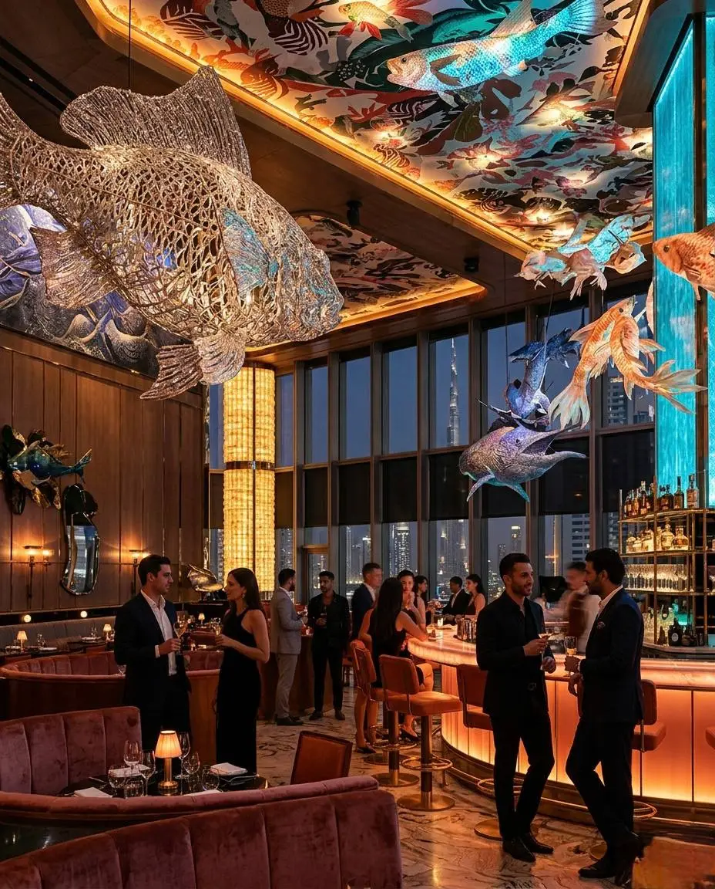

STARTUP GUIDE
A practical guide to understanding the costs of launching a startup in Dubai, including licensing, office space, banking, operations, and growth planning.
Dubai has become one of the region's leading startup destinations thanks to its strategic location, international business environment, modern infrastructure, and access to global markets. Entrepreneurs from around the world continue to choose Dubai as a base for launching and scaling businesses.
One of the first expenses entrepreneurs encounter is company registration. Costs vary depending on the chosen business structure, licensing requirements, business activities, and jurisdiction. Planning for registration expenses should be part of any startup budget.
Businesses typically require licenses aligned with their activities. Commercial, consulting, service, technology, media, and trading businesses may have different licensing requirements and associated costs.
Dubai offers a range of workspace solutions including virtual offices, coworking spaces, serviced offices, and traditional commercial premises. Startup founders should select workspace options that balance cost efficiency with operational needs.
Opening a business bank account is an important step in establishing operations. Entrepreneurs should account for banking requirements, financial administration, accounting services, and ongoing compliance obligations when preparing budgets.
Many entrepreneurs incorporate visa-related costs into their startup planning. Requirements may vary depending on business structure, residency status, and the number of team members involved in the company.
Modern startups often require websites, software subscriptions, communication tools, cybersecurity solutions, cloud services, and digital platforms. These expenses should be considered as part of long-term operational planning.
A startup's success often depends on visibility and customer acquisition. Entrepreneurs should budget for branding, website development, digital marketing, advertising, content creation, networking activities, and business development efforts.
Additional expenses may include insurance, legal services, accounting support, payroll administration, transportation, utilities, and professional memberships. Effective budgeting helps reduce financial surprises during the early stages of growth.
Many successful startups plan for several months of operating expenses before achieving consistent revenue. Maintaining sufficient financial reserves can help founders focus on growth while navigating market challenges and business development activities.
Startup costs in Dubai vary significantly depending on industry, business model, team size, and growth objectives. Careful budgeting, realistic financial planning, and strategic decision-making can help entrepreneurs build strong foundations for long-term success.